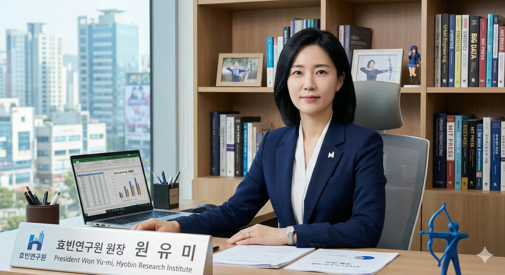

| 이름 | 원유미 (Won Yu-mi) 裕美 |
|---|---|
| 출생 | 1982년 3월 16일 (만 44세) 당시 덕빈북도 안천시 안천동 (현 효빈광역시 안천구 안천동) |
| 국적 | 대한민국 |
| 거주지 | 북구 진희동 우미린 아파트 |
| 학력 | 안천여자고등학교 (졸업) 미국 매사추세츠 공과대학교 (도시공학 / 박사) |
| 현직 | 효빈연구원 제12대 원장 (2023.07 ~ ) |
| 가족 | 여동생 원우미(優美) |
| 별명 | 빙설의 궁수 통계의 악마 |
| MBTI | ISTJ |
원유미는 대한민국의 초엘리트 도시공학자이자, 현재 효빈광역시의 씽크탱크인 효빈연구원 제12대 원장이다.
2023년 박효빈 시장 취임 이후 1년차에 전격 발탁되었으며, 부임하자마자 "덕질은 곧 경제다"라는 기적의 슬로건을 내걸고 연구원 내에 '문화산업연구실'을 대폭 확대 개편했다.
효빈시가 서브컬처 친화 도시로 나아가는 데 필요한 모든 정책적, 경제적 타당성을 복잡한 수식과 논리로 완벽하게 포장해 내는 효빈시 '덕후 행정'의 든든한 방패이자 핵심 브레인이다.
"데이터는 거짓말을 하지 않습니다. 하지만 그 데이터를 해석하는 것은 '사랑(Love)'입니다."
1982년 3월 16일, 당시 덕빈북도 안천시 안천동(현 효빈광역시 안천구 안천동)에서 태어났다.
부모님이 언니인 그녀에게는 '넉넉하고 아름다워라'는 뜻의 유미(裕美)라는 이름을, 동생에게는 '뛰어나고 아름다워라'는 뜻의 우미(優美)라는 이름을 지어주셨다. 뜻은 참 좋으나 발음이 너무 비슷해 자매는 평생을 고통받게 된다. 택배기사님 멈춰!
학창 시절은 안천구의 안천여자고등학교에서 보냈다. 흥미롭게도 그녀는 당시 궁도부(양궁 아님, 국궁/화궁)의 에이스로 활약했다고 전해지며, 차가운 인상과 뛰어난 실력 덕분에 주변 학교에서도 팬클럽이 생길 정도였다고 한다. 원장실 책상 서랍 깊숙한 곳에 당시 활을 쏘던 사진이 부적처럼 숨겨져 있다는 소문이 파다하다. 이후 미국으로 유학을 떠나 MIT에서 도시공학 박사 학위를 취득하며 초엘리트 코스를 밟았다.
평소에는 웃음기 하나 없는 서늘한 인상에 칼 같은 일처리를 자랑한다. 결재를 올릴 때 통계 수치가 조금이라도 어긋나면 특유의 얼음장 같은 목소리로 "이 통계의 신뢰구간(Confidence Interval)이 의심스럽군요. 다시 해오세요."라며 연구원들을 가차 없이 갈군다(?). 이때 뿜어져 나오는 패기 덕분에 층간 소음마저 얼어붙는다는 괴담이 있다.
하지만 그녀의 진가는 데이터 뒤에 숨겨진 '덕심'에 있다. 단순한 경제학적 분석을 넘어, 서브컬처 팬덤의 소비 패턴과 심리를 꿰뚫어 보는 통찰력을 지녔다. 덕분에 효빈문화재단이 기획한 행사 예산안이 시의회에서 삭감될 위기에 처할 때마다, 그녀가 들고 온 엑셀 표 한 장이면 의원들이 꿀 먹은 벙어리가 된다고 한다. [1]
성지순례객(덕후) 1인당 평균 지출액이 일반 관광객의 2.8배에 달한다는 사실을 빅데이터로 증명한 기념비적인 보고서를 발간했다.
이 보고서는 효빈광역시가 HAF 국비를 따내는 데 말 그대로 '치트키'로 작용했다.
그녀의 논리에 따르면 오타쿠들은 밥을 굶어도 굿즈는 사기 때문에 지역 경제의 훌륭한 젖줄이라는 것이다. 뼈 때리지 마라
극우 성향 시민단체 대표 이차야가 가상 아이돌 홀로그램 콘서트 타당성 조사 보고서를 흔들며 "혈세 낭비"라고 선동하자, 직접 정문으로 출격했다.
"이 기술로 지역 스타트업 50개가 살고 청년 일자리 2,000개가 생깁니다. 데이터도 못 읽으면서 소리 지를 시간에 엑셀(Excel)이나 배우고 오시죠."
얼음장 같은 표정으로 차갑게 팩트 폭격을 날리자 멘탈이 털린 이차야는 아무 말도 못하고 도망치다 화단에 코가 깨지는 굴욕을 당했다(...).
원우미 (여동생): 원유미의 친동생. 이름이 '유미'와 '우미'로 한 글자 차이인 데다 발음마저 비슷해서 집에서 어머니가 부를 때마다 매번 대답이 겹쳐 환장한다고 한다.
두 자매는 각자 깊은 덕질 라이프를 영위하고 있는데, 하필 택배 기사님이 송장에 '원ㅇ미'라고 날려 쓴 날에는 대형 참사가 발생한다. 서로 자기 굿즈(...)인 줄 알고 무지성으로 박스를 뜯었다가 자신의 최애가 아닌 다른 굿즈가 나오면, "언니가 왜 내 굿즈를 뜯어!!!" "송장에 이름이 안 보이잖아!!"라며 거대한 자매 대첩이 벌어지곤 한다.
밖에서는 피도 눈물도 없는 '통계의 악마'지만 집에만 가면 영락없는 현실 K-장녀의 모습을 보여준다고. 최근엔 분쟁 방지를 위해 가명으로 택배를 시킨다는 소문이 있다.
최대현 (효빈교통공사 사장): 영혼의 파트너이자 지독한 츤데레 콤비.
최대현이 "원장님! 이런 노선 뚫고 싶다! 이타샤 버스 100대 도입합시다!"며 무지성으로 지르면, 원 원장은 "B/C값(비용 대비 편익)이 안 나옵니다, 사장님. 기각합니다."라며 냉정하게 태클을 건다. 하지만 결국 밤을 새워서라도 타당성(숨겨진 편익)을 만들어주는 기적을 행한다. [2] 이게 사랑이 아니면 뭐란 말인가 (최대현에 대한 사랑이 아니라 장르에 대한 사랑이다)
놀랍게도 본인 스스로가 러브 라이브!의 소노다 우미를 인생 최애로 삼고 있는 진성 오시(팬)이다. 그런데 파고들면 파고들수록 소름 돋는 평행이론이 성립한다.
자기 자신이 그 캐릭터와 너무나도 소름 돋게 똑같은데 정작 본인이 그 캐릭터를 덕질하고 있는 기묘한 상황이다. 이 때문에 연구원들 사이에서는 여동생 이름이 '우미'인 것도 사실 부모님이 지어주신 게 아니라 본인이 덕심을 담아 동생 개명을 강요시킨 것 아니냐는 합리적 의심(...)을 받고 있다.
물론 연구원 내부에서는 본인 앞에서 이 모든 캐릭터성(파란 머리, 활, 생일 1일 차이)을 대놓고 엮어서 말하는 것을 철저한 금기로 삼고 있다. 눈치 없이 "원장님 완전 우미 판박이..."라고 했다간 곧바로 시말서 10페이지를 논문 형식으로 제출해야 할 수도 있다.
평소의 깐깐한 모습과 달리, 회식 자리에서 노래방에 가면 애니메이션 주제가를 완벽한 바이브레이션과 칼군무로 소화해 신입 연구원들을 경악하게 만든다. 특히 '우리는 하나의 빛(僕たちはひとつの光)'이나 'Snow halation'이 예약되면 마이크를 쥔 원장님의 포스에 억눌려 회식 분위기는 그야말로 종교 부흥회, 혹은 라이브 뷰잉 현장으로 돌변한다.
현재 거주지가 하필 북구 진희동 우미린(우미Lynn) 아파트다.
동생 이름인 '우미(優美)'와 아파트 브랜드명이 완벽하게 일치하는 탓에, 자기가 평생 모은 돈으로 대출받아 산 집임에도 불구하고 "왜 건설사들은 유미린 아파트는 안 짓는 거냐", "내 집인데 어째 동생 이름표가 붙은 집에 얹혀사는 기분이다"며 종종 억울함을 토로한다고 한다. 동생 원우미는 "이 집은 이제 제 껍니다"라며 언니를 놀려먹는다는 후문.
연구원 구내식당 메뉴 선정에 은근한 압력을 행사한다는 의혹이 있다. 매주 금요일마다 특정 캐릭터의 식성이나 애니메이션에 등장했던 '귤 카레'가 고정 메뉴로 나오는 것은 결코 우연이 아닐 것이다.